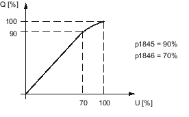
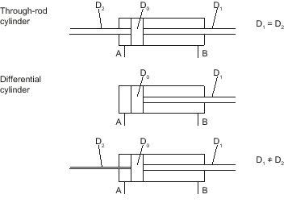
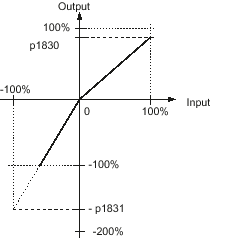

Overview
The valve characteristic represents the piston velocity depending on the valve control voltage as percentage values. The real characteristic is not stored in the drive, but a simplified characteristic. The simplified characteristic is made up section-by-section of straight lines and parabolic curves. The sections are defined using 16 parameters.
The simplified valve characteristic should be as close as possible to the real characteristic. To achieve the best approximation, you must perform the following steps:
-
Measure the real characteristic
-
Perform the automatic calculation of the simplified characteristic
-
Tune the simplified characteristic manually
You must enter some parameters for the measurement of the valve characteristic.
Measured characteristic
When measuring the characteristic, the piston moves between the end points with increasing velocity. Measured values are generated for both directions of motion. The measured characteristic comprises maximum 512 measuring points. A characteristic stored in the drive is specifically for a drive data set (DDS). The measurement of the characteristic from which the characteristic stored in the drive is determined, therefore always refers to the currently active drive data set.
Simplified characteristic
The simplified valve characteristic is made up of eight sections.

Starting at the zero point, the simplified characteristic comprises a short straight line, the zero range, which is rounded through a parabola into a further straight line of the knee range. The straight line of the knee range is also rounded through a parabola into the saturation range. This also starts with a straight line followed by a parabola on a continuous tangent open to the bottom, which ends at point Q = 100%, U = 100%.
Knee points of the simplified characteristic
Several subranges map the non-linear characteristic of valves. A knee on real valves is rounded. For this reason, a knee in the compensation is also rounded. The rounding is based on a root characteristic in such a way that the intersection points lie on a continuous tangent; the rounding range can be set as required.
The knee point is defined by the percentage for input (voltage) and output (volume flow).
Knee in the zero range
To calculate the inverse characteristic, a knee point is specified in the positive zero range of the valve characteristic with p1833 and p1834 and in the negative zero range with p1836 and p1837.
The positive valve volume flow at the knee point in relation to the rated volume flow is entered in p1833 and the negative value in p1836.
The positive valve voltage at the knee point in relation to the rated valve voltage is entered in p1834 and the negative value in p1837.
With the factory setting "0" in p1834, there is no knee in the positive zero range. With the factory setting "0" in p1837, there is no knee in the negative zero range.
The rounding range is parameterized in p1835.Knee in the knee range
To calculate the inverse characteristic, the knee point is specified in the positive quadrant of the valve characteristic with p1839 and p1840 and in the negative quadrant with p1842 and p1843.
The positive valve volume flow at the knee point in relation to the rated volume flow is entered in p1839 and the negative value in p1842.
The positive valve voltage at the knee point in relation to the rated valve voltage is entered in p1840 and the negative value in p1843.
With equal values (default value) in p1839 and p1840, the characteristic is linear, with no knee in the zero range (default value) and no saturation (default value).This knee data is preset from the valve data (p0205, p0206) through "Calculate controller data". It can be changed later. The rounding range is not valve data and is therefore only preset to a default value. It can however be changed later with the p1841 data. If necessary, a measurement can be taken to obtain a precise setting.
Note A constant machining velocity of the drive directly at the knee point of the valve is not recommended.
Knee at the start of a saturation range
To calculate the inverse characteristic, the start of a parabolic, rounded saturation range in the positive and negative quadrants of the valve characteristic are specified with p1845 and p1846 and with p1847 and p1848.

The positive valve volume flow at the start of the saturation range in relation to the rated valve volume flow is entered in p1845 and the negative value in p1847.
The positive valve voltage in relation to the rated valve voltage is entered in p1846 and the negative valve voltage in p1848.
The saturation range is compensated by a root characteristic in such a way that the intersection point lies on a continuous tangent and the characteristic ends at the point (100%, 100%).
There is no saturation range in the positive or negative quadrant with default value 100% in p1845 and p1846 or in p1847 and p1848.
Area adaptation / controlled system gain
A distinction is made between a through-rod cylinder and a differential cylinder for the cylinder design.
In differential cylinders, the piston area in the forward direction is different to that in the backward direction. The area adaptation must be parameterized for the compensation.
The following figure shows a sample characteristic for the area adaptation and illustrates how the associated machine data works. In practice, only one of the gradients is weighted with a factor not equal to 100%. Normally, the gradient that causes the travel-out of the cylinder drive is weighted with a factor less than 100%.
